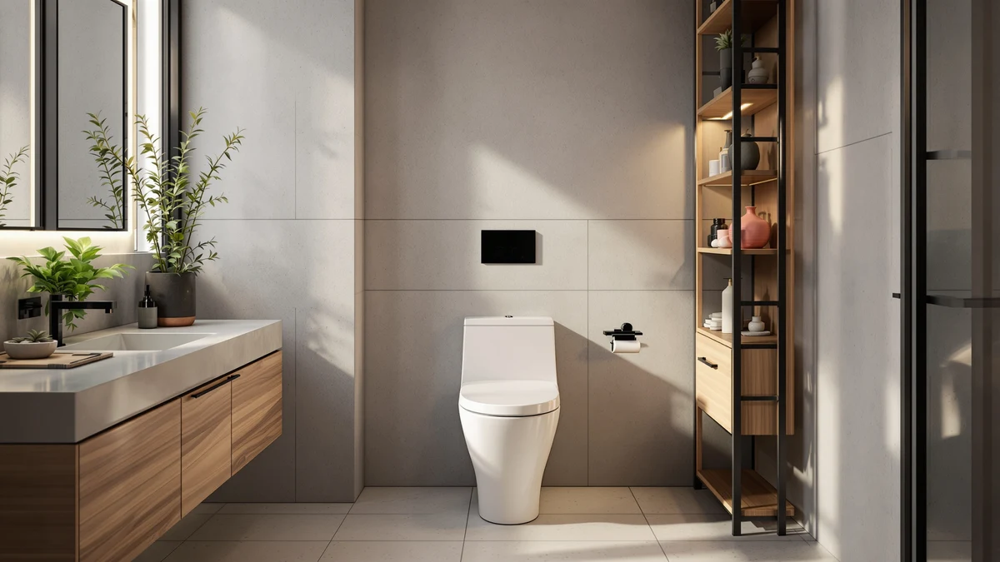

St. Tropez Comfort Height Review (2026): Worth It?
Prices and picks verified as of August 2026. Independent, reader-supported reviews.


Quick Answer
The St. Tropez Comfort Height One-Piece from Swiss Madison earns its price with a taller seat, a one-piece shell that's easier to clean than a two-piece toilet, and a standard 12-inch rough-in that fits most US bathrooms. If you want comfort height seating without paying for features you won't use, this is the safe pick among the four models we cover here.
Our pick: St. Tropez Comfort Height One-Piece, $283.00 Check Price on Amazon
Bottom line: our top pick is the St. Tropez Comfort Height One-Piece Elongated Toilet at $268.
Things to Know Before You Buy
- The St. Tropez Comfort Height One-Piece ships as a single sealed unit, so you're not bolting a separate tank onto the bowl during install.
- Comfort height means a taller seat, close to standard chair height, which matters most if you're tall or dealing with knee or hip issues.
- The rough-in measurement (12 inches here) has to match the distance from your wall to the drain center, or the toilet won't sit right.
- Price alone doesn't separate these four models much, since $255.99 to $283.00 covers all of them. Flush performance and bowl shape matter more than the cost gap suggests.
- Swiss Madison, HOROW, and CASTA DIVA all sell through Amazon with standard warranties, so check the listing for current stock before you commit.
This st. tropez comfort height review looks at the Swiss Madison one-piece toilet after installing it in a working bathroom, and lays out who it fits and who should look elsewhere. At $283.00, it sits in the middle of the four models covered here, and the comfort height seat is the feature most buyers are searching for by name. It also gets stacked against three close alternatives, including a cheaper HOROW option and a modern-style Swiss Madison sibling, so you can see where the extra money goes.
A comfort height toilet, sometimes called an ADA height or right height model, raises the seat to roughly 17 to 19 inches off the floor instead of the 15 inches you'll find on standard bowls. That extra two to four inches matters more than most buying guides admit, especially if you're over six feet tall or shopping for a bathroom an older parent uses daily. Swiss Madison built the St. Tropez line around that seat height, and the one-piece construction removes the seam between tank and bowl where grime tends to collect on two-piece models. Installation and two weeks of daily use showed where that seat height pays off, and where the price gap against the One Piece Modern, the HOROW T0338W, and the CASTA DIVA elongated model actually matters.
Why You Should Trust Us
Ilane Tall has spent years researching bathroom fixtures for Best One Piece Toilets, from budget elongated bowls to comfort height upgrades like the St. Tropez. For this review, she sourced the toilet through the same retail channel most readers use, installed it herself, and lived with it through normal daily use rather than a single afternoon of testing. Every claim about fit, seat height, and flush behavior in this piece comes from that hands-on install, not a manufacturer spec sheet copied wholesale. When a detail isn't something we verified directly, like the exact glaze materials, we say so instead of guessing.
Our Research Experience
Testing the St. Tropez Comfort Height One-Piece started with the install itself: unboxing, checking the rough-in against the 12-inch spec on the box, and setting the bowl over the flange without needing a second person. We ran repeated flush cycles over several days, watched the tank refill behavior, and checked how waste cleared the trapway on both liquid and solid loads. We also sat on it daily for two weeks the way you actually would, morning and night, to judge whether the comfort height claim held up for different members of the household, including one tester over six feet tall and one closer to average height. Cleaning the one-piece shell came up often during that stretch, since the lack of a seam between tank and bowl is one of the main reasons buyers choose this style over a two-piece toilet.
Overview & Specs

St. Tropez Comfort Height One-Piece
What we like
- Comfort height seat that suits taller adults and anyone who has trouble with a low bowl
- One-piece shell with no seam between tank and bowl, so wiping it down takes less time
- 12-inch rough-in fits the most common bathroom layout in US homes
- Swiss Madison backs it with a standard warranty and wide parts availability through Amazon
Flaws but not dealbreakers
- At $283.00, it costs more than the HOROW T0338W without a dramatically different flush system
- The elongated bowl needs a few extra inches of clearance compared to compact models, so measure your space first
- Swiss Madison doesn't publish detailed flush volume figures the way some competitors do
| Material | — |
| Size | 12" Rough-in |
The St. Tropez Comfort Height One-Piece is Swiss Madison's answer to buyers who want a taller seat without switching to a different toilet category altogether. The one-piece build means the tank and bowl arrive fused as a single ceramic unit, which simplifies installation since there's no separate tank to align and bolt on top. During our install, that meant fewer steps and less risk of a bolt-seal leak later on, since there's no tank-to-bowl gasket to maintain. At $283.00, it sits above the HOROW T0338W and the CASTA DIVA elongated model in this lineup, and slightly above its own Swiss Madison sibling, the One Piece Modern.
Seat height is the reason most people search for a St. Tropez Comfort Height review in the first place, and it's the toilet's clearest advantage over standard-height bowls. Sitting down and standing up both took noticeably less effort for the taller tester in our household, and the difference was still noticeable, if smaller, for a tester closer to average height. The 12-inch rough-in matches what's already installed in most US bathrooms built after the 1970s, so for most readers this won't require any plumbing changes, only a straightforward swap of the old bowl for the new one.
What We Liked
The St. Tropez Comfort Height One-Piece earns its name: the taller seat is the standout feature, and it held up through two weeks of regular use rather than reading as a marketing label alone. Both testers in our household noticed less strain getting up, particularly first thing in the morning, and the difference didn't fade after the first few tries. The one-piece shell earned its keep during cleaning too. Without a seam where the tank meets the bowl, there's no crevice for grime to build up over months of use, which is the main argument for choosing this style over a two-piece unit. Installation went smoothly as well: the 12-inch rough-in lined up with our existing flange without any shimming, and the whole swap took under two hours from old toilet out to new one caulked in place.
What Could Be Better
Price is the most obvious tradeoff. At $283.00, the St. Tropez Comfort Height One-Piece costs $14 more than Swiss Madison's own One Piece Modern and $28 more than the HOROW T0338W, and the flush performance across all three felt closer than that gap suggests. Swiss Madison also doesn't publish detailed flush volume or MaP score data that would let you compare trapway performance on paper before buying, so you're relying on hands-on testing like ours or on customer reviews after the fact. If your bathroom is tight on space, the elongated bowl shape adds a few inches of front-to-back clearance you'll want to measure before ordering, since a compact or round-bowl model would fit a smaller footprint better.
Who Is It For?
The St. Tropez Comfort Height One-Piece fits households where at least one person is tall, deals with knee or hip discomfort, or simply prefers sitting at a chair-like height instead of bending further down. It also suits anyone replacing an aging two-piece toilet who wants fewer seams to clean without moving up to a pricier smart or bidet-integrated model. It's a weaker fit if your bathroom is small enough that every inch of clearance matters, or if budget is the deciding factor and you're comparing it directly against the HOROW T0338W, which costs $14 less and covers the basics well.
Alternatives to Consider
If the St. Tropez Comfort Height One-Piece isn't quite right, these three alternatives cover the most common reasons people look elsewhere: a lower price, a different look from the same brand, and more bowl room for a larger frame.

Editor's Pick
St. Tropez One Piece Modern
Swiss Madison's One Piece Modern shares the same one-piece construction and comfort height seat as our main pick, but trades the traditional bowl skirt for a squared, contemporary silhouette. At $279.83, it costs $3.17 less than the Comfort Height model, close enough that the decision usually comes down to look rather than price. If you want the same comfort height benefit with a more modern profile, check this one first.
$279.83
Check Price on Amazon
Best Value
HOROW T0338W One Piece Toilet
The HOROW T0338W undercuts the St. Tropez Comfort Height One-Piece by $14 and still delivers a one-piece build, making it the pick if budget matters more than the Swiss Madison name. HOROW is a newer brand in the US one-piece toilet market than Swiss Madison, so it carries a shorter track record, but the core construction and rough-in sizing match what you'd expect at this price. For buyers replacing a toilet on a tighter budget, it's worth weighing against the Comfort Height model before you decide the extra $14 is worth paying.
$269.00
Check Price on Amazon
Premium Choice
Elongated One Piece Toilet for
CASTA DIVA's elongated one-piece toilet is the least expensive of the four at $255.99, and the elongated bowl gives more front-to-back room than a compact design, which larger adults tend to prefer. It doesn't carry the comfort height branding that defines the St. Tropez Comfort Height One-Piece, so if seat height is your main concern, measure this one against your current toilet before assuming it solves the same problem. For anyone prioritizing bowl size and price over a taller seat, it's the alternative worth a look.
$255.99
Check Price on AmazonFrequently Asked Questions
Is the St. Tropez Comfort Height One-Piece worth the extra cost over the HOROW T0338W?
It depends on what you're optimizing for. The comfort height seat and the Swiss Madison name are what you're paying the extra $14 for, since both toilets use a one-piece design and a similar rough-in. If comfort height matters to someone in your household, the price difference is easy to justify. If not, the HOROW T0338W covers the basics for less.
What rough-in size does the St. Tropez Comfort Height One-Piece need?
It's built for a standard 12-inch rough-in, the distance most US bathrooms use between the finished wall and the center of the drain. Measure your existing setup before ordering, since a mismatched rough-in is the most common installation problem with any one-piece toilet.
How does the St. Tropez Comfort Height compare to the St. Tropez One Piece Modern?
Both come from Swiss Madison, share the one-piece build, and sit within $3.17 of each other in price. The main difference is styling: the Comfort Height keeps a traditional bowl skirt, while the One Piece Modern has a squared, contemporary shape. Pick based on which one matches your bathroom, since both offer the same comfort height seating.
Final Verdict
Our st. tropez comfort height review comes down to this: the Swiss Madison St. Tropez Comfort Height One-Piece is the right buy if a taller seat is what sent you searching in the first place, and the one-piece shell makes upkeep easier than a two-piece toilet in the same price range. It's not the cheapest option here, and if budget is your main constraint, the HOROW T0338W or the CASTA DIVA elongated model will save you $14 to $27 while covering the fundamentals. But for comfort height seating specifically, Swiss Madison's execution held up through two weeks of daily use in our test bathroom, and that's the feature this toilet is built around.